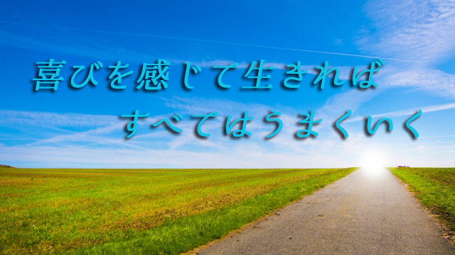

生きる喜びとはどんなときに感じるものだろう。夢中で何かに熱中しているとき。困難を克服して何かを達成したとき。目標が明確で自分がそこに向かっているという確かな手応えを感じるとき。そんなとき私たちは充実感と生きる喜びを感じるだろう。
しかし、気をつけねばならないことは、その喜びが常に外側のカタチを対象としたものである場合は永続性をもたない、つまり一過性で終わる可能性が高いということだ。
苦労の末やっと目標を成し遂げたという感動ストーリ―を人は好むものだし、本人もその達成感に病みつきになりやすい。だからその夢の再現を試みることになる。しかし2度目はある種のパターンになる。最初のときのような無我夢中さは消え、失敗の回避や効率性を追究し始める。
そのとき喜びは義務に変わり、ワクワクした躍動感は味気ない作業に転じてしまう。何とか成功しているという形（カタチ）を整えることにエネルギーを使い果たしてしまう。仮にそのパターンでうまく行ったとしても最初のあの「喜び」は得られない。
既に書かれた筋書きをなぞっているかのような徒労感しかない。
これは仕事、恋愛、経済的成功どんなものにも当てはまる。外側すなわち世間が認める「成功」を手にすることが喜びだと錯覚している限り、永続性のある喜びを持ち続けることは難しい。嬉しいのは一瞬ですぐに喜びは色あせる。時にはその対象（成功）そのものが悩みのタネになったりする。そうしてまた新たな対象を探し出すというくり返し。
それなら永続性のある喜びをどうしたら手に入れられるのか。生きる喜びにあるとはどういうことなのだろうか。
それは、常に自分に新しい風を吹かせるような生き方をすることだ。くり返しのパターンに染まらず自分の可能性に常に心を開いてそれを十全に生かすこと。言いかえれば、外側を基準にせず「自分を生きる」ということだ。
自分に新しい風を吹かせる
多くの人は自由に自分の人生を選んでいるつもりであっても、実際はそうではなく無意識に制限を課している。職業の選び方もそうだし、仕事のやり方も人間関係でのふるまいもそうだ。本当に心の底から、魂から求めるような生き方をしている人は少ない。
「変な人と思われると損だ」「波風を立ててはいけない」「ここでのやり方は昔からこうと決まっている」「生活のためだから仕方ない」
こんな風に自分で勝手に可能性を制限している。そうして世間が受け入れそうな範囲の中で、目標設定し計画を練りリスクを計算したりしている。その目標も自分で決めているようで会社が設定していたり、いま流行（はやり）のライフスタイルであったりする。
これでは「自分を生きている」ことにならない。外側から与えられた他者依存的な人生でしかない。いわばお仕着せの人生だということ。
自分なりに努力もし、それなりに達成もしているわりに充足感がなく不安やイラ立ち焦燥感を感じているのなら、世間（他者）の認める成功や幸せの基準に従い過ぎていないか、自分の可能性を制限していないか考えてみるべきだ。
青少年に限らず大人であっても人間の可能性は想像以上に大きく多彩だと実感している。私自身60を過ぎてから別の仕事を新しく始めたり、やったことのないことにチャレンジし続けているが、オーバーに言えば人生観が変わるほどその体験は新鮮で衝撃的である。
それは「自分の中にこんな面もあったのか」という発見であり、今までの自分ならできるとは思えないことができる驚きであったりと、いわば新しい自分に出会う喜びである。
そうした個人的満足だけでなく今までやって来たことの積み重ねも、新しい試みの中で十分に生かすことで相乗効果も生まれている。つまり形（カタチ）の上でも成果が表れている。
私たちはとかく「自分にはこれができるがアレはできない」とか「あんなことは自分には到底無理だ」と思いがちだ。そしてもっと違う現実があればいいと望みながら習慣的、惰性的日常をくり返してしまう。
だから「新しい風」を吹かせることが大事なのだ。それによって自分の可能性が開く。
私は何も「サラリーマンを辞めてミュージシャンになれ」とか「放浪の旅に出ろ」と言ってるのではない。転職を勧めているのでもない。普段の習慣を少し変えてみるとか、いつもと同じ反応を止めてみるとか物の見方を意識的に変える。仕事の手順や方法を変えてみる。そんなささやかな「新しさ」を加えるだけで停滞していた人生は大きく動き出すと言いたい。
目標達成より自己追究が大事
ところで仕事でも日常生活でも物事がうまく展開しているとき何が起こっているのだろう。
会社のプロジェクトが成功した。取引き先とよい契約が結べた。起業してやっと事業が軌道に乗った。人間関係がスムースに運んでいる。
そこには共通点がある。「成果を上げよう」「目標を達成しよう」という欲得が抜け落ちて純粋に自分の可能性を追究している。そんなときではないだろうか。
もちろんスタート時点では「成果を上げたい」という目的意識はあるだろう。しかし渦中においてはそんなことは忘れ、ただひたすら自分のやるべきことを夢中でやっている。そこには喜びがあり充実がある。従って困難や障害、トラブルさえも苦痛なく乗り越えていくことができる。そして気がついたら「うまく行っていた」ということになる。
後で振り返れば「感動ストーリー」があったということだ。
私たちは子どもの頃から「目標をもつことの大切さ」を教え込まれてきた。故にうまく行けば目標をもって頑張ったからだと思い、失敗すれば努力が足りなかったからだと落ち込む。しかし目標達成する（成果を上げる）ことばかりを追究する人生は苦難の連続となる。
人を目標や成果へ向けて駆り立てる考えは、資本主義社会特有の物質至上主義的発想であり、人間の喜びや幸せを保証するものではない。それに踊らされてはならない。
私たちは、どんなときも何をやるにしても外側のカタチ（成果）を求めるのではなく、自分の内奥から沸き起こる魂の声にこそ従うべきだ。その、オリジナルの発想や行動こそが生きる喜びであり充実である。
そうして生きていると成果（結果）は自分の後ろに、歩んで来たその道に残されていることに気づくだろう。喜びを感じて生きればすべてはうまくいくということだ。